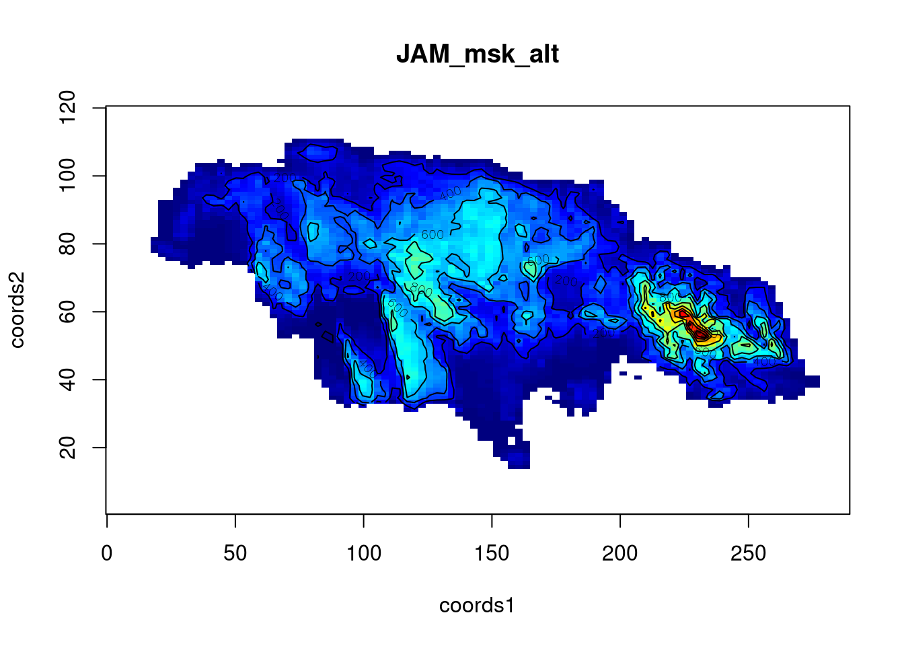

Convert a elevation RasterLayer from the package raster or an Google Maps Elevation API Call to a function that you can optimize.
Installation
devtools::install_github("jakob-r/geo2smoof")library(geo2smoof)
# list available countries
# raster::getData('ISO3')
alt = raster::getData('alt', country='JAM')
sf = convertRasterLayerToSmoof(raster.layer = alt)
plot2DNumeric(sf, render.levels = TRUE)
# find the highest point with optim()
optim(c(140,80), fn = function(...) -1 * sf(...), )## $par
## [1] 142.75146 87.33496
##
## $value
## [1] -762
##
## $counts
## function gradient
## 29 NA
##
## $convergence
## [1] 0
##
## $message
## NULL